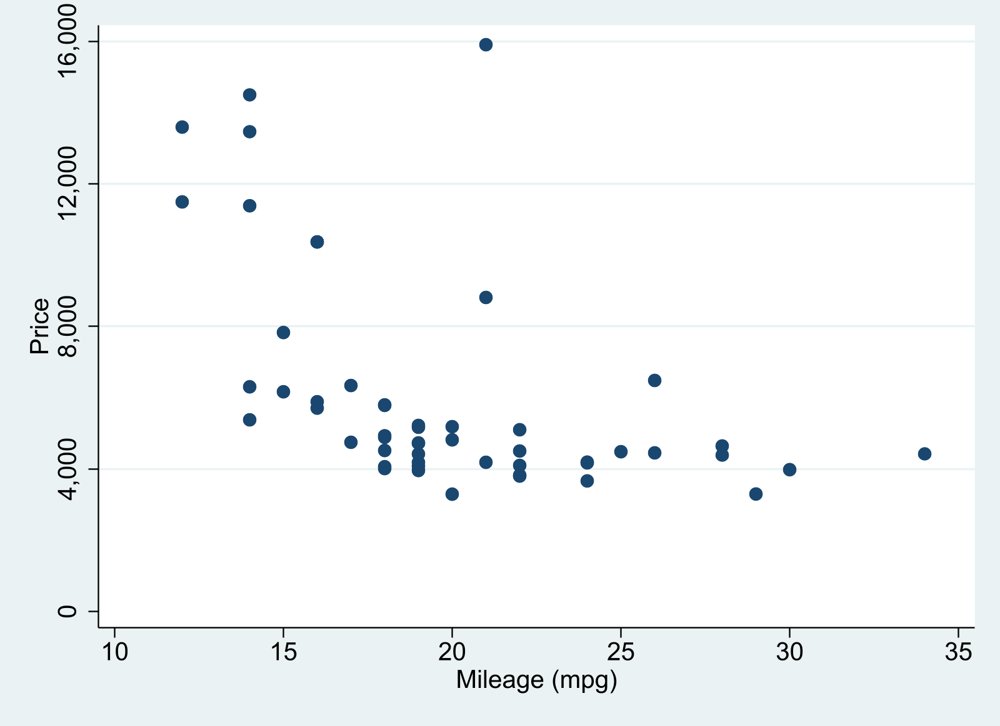

This article is a simple example of how to use Quarto to create dynamic documents using Stata. Which is possible using the Stata kernel nbstata thanks to Tim Huegerich, who put this incredible tool together.
For now lets assume that you have Stata and Python installed, and working together, so that you can use Stata from Python. If this is working, installing nbstata is as simple as typing the following from the command window:
pip install nbstatapython -m nbstata.install# or to update pip install nbstata --upgrade
You probably do not need --conf-file, but if you want to apply other options to Stata output, you may beed to create the config file, and modified as needed.
Quarto Setup
While this page is being rendered as a quarto website project, you can also use the following YAML heading, once you installed Python and nbstata in your computer. You will also need Quarto (if using say VSC) or one of the latests iterations of Rstudio.
---title: Using Quarto for Stata dynamic documentsformat: htmljupyter: nbstata---
This request using the nbstata as the kernel, allowing Quarto to use Python to call on Stata.
Lets do this:
Let us consider an example where we study the mpg and weight variables in auto.dta. In this example, all code used to construct the desired output will be displayed as fenced block code, followed by the output it produces. This is done using the option *|echo: fenced.
We first use the sysuse command to load the dataset and then describe the data using the describe command.
Code
```{stata}sysuse auto, cleardescribe```
(1978 automobile data)
Contains data from C:\Program Files\Stata17/ado\base/a/auto.dta
Observations: 74 1978 automobile data
Variables: 12 13 Apr 2020 17:45
(_dta has notes)
-------------------------------------------------------------------------------
Variable Storage Display Value
name type format label Variable label
-------------------------------------------------------------------------------
make str18 %-18s Make and model
price int %8.0gc Price
mpg int %8.0g Mileage (mpg)
rep78 int %8.0g Repair record 1978
headroom float %6.1f Headroom (in.)
trunk int %8.0g Trunk space (cu. ft.)
weight int %8.0gc Weight (lbs.)
length int %8.0g Length (in.)
turn int %8.0g Turn circle (ft.)
displacement int %8.0g Displacement (cu. in.)
gear_ratio float %6.2f Gear ratio
foreign byte %8.0g origin Car origin
-------------------------------------------------------------------------------
Sorted by: foreign
Now, we want to check if mpg is always greater than 0 and less than 100. We use the assert command to perform the check. In this case, we do not want to include any output in the target HTML file, so we use the quietly attribute to modify the behavior of the dd_do Stata dynamic tag.
Code
```{stata} assert mpg > 0 & mpg < 100```
If the data do not satisfy the conditions, quatro will fail with an error message, which will occur if we run the same assert command in a do-file.
Next, we want to summarize the weight variable:
Code
```{stata}summarize weight```
Variable | Obs Mean Std. dev. Min Max
-------------+---------------------------------------------------------
weight | 74 3019.459 777.1936 1760 4840
We want to use the minimum and maximum values of weight in a sentence. Instead of copying and pasting the numbers from the summarize output, we can use the display Stata to show r(min) and r(max) stored results. We will also use the options *| output: asis to obtain text that follows markdown formatting.
Code
```{stata}*| output: asisdisplay "The variable weight has minimum value " %4.2f `r(min)' " and " /// "has maximum value " %4.2f `r(max)' "."```
The variable weight has minimum value 1760.00 and has maximum value 4840.00.
In other words, if one wants to use dynamic tags, its possible to do so by simply using display, with the corresponding locals, so Stata evaluates the expressions as normal. *| output: asis is used so the output can still be interpreted using markdown syntax.
As with dyndoc, display can also be used as a calculator. For example, if we want to include the \(range = max - min\) in a sentence, instead of calculating the number and then copying and pasting it, we can use
Code
```{stata}*| output: asisdisplay "The variable weight has range " %4.2f `r(max)'-`r(min)' "."```
The variable weight has range 3080.00.
Now, we want to graph mpg and weight using a scatterplot. There are at least two ways to do this.
First, one can simply create the scatterplot using the same procedure as before:
Code
```{stata}scatter mpg weight, mcolor(blue%50)```
which generates a scatterplot of mpg and weight with 50% opacity color markers.
Now, we want to export the graph to a file and include an image link to the file.
And of course, we can now the figure tags to link it to the text:
Figure 1 provides a simple scatter between prices and MPG for foreign and domestic cars. While there seems to be a strong negative relationship between these variables among foreign cars (see Figure 1 (a)), the relationship among domestic cars is much weaker, when looking at cars with a fuel efficiency larger than 15mpg (see Figure 1 (b)).
The last approach, however, may not work with PDF format, or jupyter-notebook format, unless the figures are saved. But does seem to work with HTML and docx.
Nevertheless, one could also do the following:
::: {#fig-mpgprice layout-ncol=2 .column-page }{#fig-mpgprice-1}{#fig-mpgprice-2}Price vs MPG:::
to produce
(a) foreign

(b) domestic
Figure 2: Price vs MPG
As plot in Figure 2 provides a simple scatter between prices and MPG for foreign and domestic cars. While there seems to be a strong negative relationship between these variables among foreign cars (see Figure 2 (a)), the relationship among domestic cars is much weaker, when looking at cars with a fuel efficiency larger than 15mpg (see Figure 2 (b)).
If using VScode, to render all formats at once, you need to type quarto render filename.qmd in the terminal.
Source Code
---title: Using Quarto for Stata dynamic documentsformat: html---## IntroductionThis article is a simple example of how to use `Quarto` to create dynamic documents using `Stata`. Which is possible using the Stata kernel `nbstata` thanks to [Tim Huegerich](https://github.com/hugetim), who put this incredible tool together.To use this, you will need:- Stata 17 or higher- python- [nbstata](https://github.com/hugetim/nbstata)## InstallationFor now lets assume that you have Stata and Python installed, and working together, so that you can use Stata from Python. If this is working, installing `nbstata` is as simple as typing the following from the command window:``` powershellpip install nbstatapython -m nbstata.install # or to update pip install nbstata --upgrade```You probably do not need `--conf-file`, but if you want to apply other options to Stata output, you may beed to create the config file, and modified as needed.## Quarto SetupWhile this page is being rendered as a quarto website project, you can also use the following YAML heading, once you installed `Python` and `nbstata` in your computer. You will also need Quarto (if using say VSC) or one of the latests iterations of Rstudio.``` yaml---title: Using Quarto for Stata dynamic documentsformat: htmljupyter: nbstata---```This request using the `nbstata` as the `kernel`, allowing Quarto to use Python to call on Stata.## Lets do this:Let us consider an example where we study the **mpg** and **weight** variables in **auto.dta**. In this example, all code used to construct the desired output will be displayed as fenced block code, followed by the output it produces. This is done using the option `*|echo: fenced`.We first use the **sysuse** command to load the dataset and then describe the data using the **describe** command.```{stata}*| echo: fencedsysuse auto, cleardescribe```Now, we want to check if **mpg** is always greater than 0 and less than 100. We use the **assert** command to perform the check. In this case, we do not want to include any output in the target HTML file, so we use the **quietly** attribute to modify the behavior of the **dd_do** Stata dynamic tag.```{stata}*| echo: fenced assert mpg > 0 & mpg < 100```If the data do not satisfy the conditions, **quatro** will fail with an error message, which will occur if we run the same **assert** command in a do-file.Next, we want to summarize the **weight** variable:```{stata}*| echo: fencedsummarize weight```We want to use the minimum and maximum values of **weight** in a sentence. Instead of copying and pasting the numbers from the **summarize** output, we can use the **`display`** Stata to show **r(min)** and **r(max)** stored results. We will also use the options `*| output: asis` to obtain text that follows markdown formatting.```{stata}*| echo: fenced*| output: asisdisplay "The variable weight has minimum value " %4.2f `r(min)' " and " /// "has maximum value " %4.2f `r(max)' "."```In other words, if one wants to use dynamic tags, its possible to do so by simply using display, with the corresponding locals, so Stata evaluates the expressions as normal. `*| output: asis` is used so the output can still be interpreted using markdown syntax.As with **`dyndoc`**, display can also be used as a calculator. For example, if we want to include the $range = max - min$ in a sentence, instead of calculating the number and then copying and pasting it, we can use```{stata}*| echo: fenced*| output: asisdisplay "The variable weight has range " %4.2f `r(max)'-`r(min)' "."```Now, we want to graph **mpg** and **weight** using a scatterplot. There are at least two ways to do this.First, one can simply create the scatterplot using the same procedure as before:```{stata}*| echo: fencedscatter mpg weight, mcolor(blue%50)```which generates a scatterplot of **mpg** and **weight** with 50% opacity color markers.Now, we want to export the graph to a file and include an image link to the file.```{stata}*| echo: fencedqui:graph export fig1.png, width(1600) replace```This produces a graph of 1600 pixels width.It is possible, however, to combine figure creation using quatro tags and directives. Here, however, you need to make sure all figures are named:```{stata}*| label: fig-cost*| fig-cap: Price vs MPG*| fig-subcap:*| - "Foreign Cars"*| - "Domestic Cars"*| layout-ncol: 2*| column: page *| echo: fencedscatter price mpg if foreign==1, name(m1, replace) ylabel(0(4000)16000)qui:graph export fig2a.png, width(1600) replacescatter price mpg if foreign==0, name(m2, replace) ylabel(0(4000)16000)qui:graph export fig2b.png, width(1600) replace```And of course, we can now the figure tags to link it to the text:@fig-cost provides a simple scatter between prices and MPG for foreign and domestic cars. While there seems to be a strong negative relationship between these variables among foreign cars (see @fig-cost-1), the relationship among domestic cars is much weaker, when looking at cars with a fuel efficiency larger than 15mpg (see @fig-cost-2).The last approach, however, may not work with PDF format, or jupyter-notebook format, unless the figures are saved. But does seem to work with HTML and docx.Nevertheless, one could also do the following:``` markdown::: {#fig-mpgprice layout-ncol=2 .column-page }{#fig-mpgprice-1}{#fig-mpgprice-2}Price vs MPG:::```to produce::: {#fig-mpgprice .column-page layout-ncol="2"}{#fig-mpgprice-1}{#fig-mpgprice-2}Price vs MPG:::As plot in @fig-mpgprice provides a simple scatter between prices and MPG for foreign and domestic cars. While there seems to be a strong negative relationship between these variables among foreign cars (see @fig-mpgprice-1), the relationship among domestic cars is much weaker, when looking at cars with a fuel efficiency larger than 15mpg (see @fig-mpgprice-2).If using VScode, to render all formats at once, you need to type `quarto render filename.qmd` in the terminal.